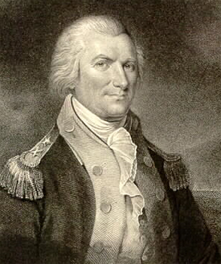
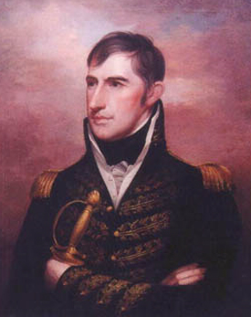
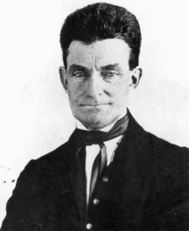

|
Early French settlers brought the first black slaves to the Old Northwest. They
used these blacks, and some Indian slaves, as farm laborers or lead miners.
While the original black slaves came from French lower Mississippi outposts,
Indians soon carried in and sold blacks captured from other colonies. Great
Britain took over the Northwest in 1763, and British merchants promptly brought
in more slaves; James Rumsey, for example, sold thirty Jamaicans to the French
villages in 1763. Other slaves were imported by Virginians after Virginia's
Revolutionary war occupation of the Northwest. France, Britain, and Virginia all
recognized the legitimacy of African slavery.
|

Arthur St. Clair
|
When the U.S. government acquired formal responsibility for the Northwest in
the 1780s, a number of prominent men urged that slavery be kept out of the
region. Some, like Timothy Pickering or Thomas Jefferson, genuinely hoped to
stop the spread of slavery. It is probable that many Southern congressmen saw
the Northwest as a potential tobacco-growing rival, and for that reason agreed
that slavery should be barred there. Article Six of the Northwest Ordinance of
1787 therefore forbade the introduction of slavery into the new Northwest
Territory.
Article Six seemed to completely rule out slavery in the Northwest. However,
territorial governor Arthur St. Clair decided to accept the existing French
slavery system. He was influenced above all by a fear that many Frenchmen, to
protect their property, would leave the Northwest and move to Spanish St. Louis.
Such an exodus would gravely weaken the territory in case of Indian or foreign
wars. In 1794, when territorial judge George Turner tried to free slaves owned
by Vincennes probate judge Henry Vanderburgh, St. Clair ruled that all pre-1787
slaves must remain in slavery.
Some of the Northwest's settlers and land speculators who wanted to promote
rapid Southern settlement called for repealing Article Six and opening the
territory to slavery. Most of the early pioneer settlers, however, opposed this
idea. The Northwest attracted many Southern Quakers and Methodist converts, at a
time when both faiths condemned slavery. Indeed, some of these antislavery
Southerners moved to the Northwest precisely because it forbade slavery. Many
other pioneers simply had no desire to compete against planters and slave labor,
or to live amidst planters and blacks. When Congress created Indiana Territory
in 1800, and removed the Ohio Valley French villages from the Northwest's
jurisdiction, support for slavery declined further. Most northwestern leaders--
whether Federalist Yankees like Ephraim Cutler or ax-planters like Thomas
Worthington--condemned the institution. At the 1802 Ohio state constitutional
convention, Cutler bottled up in committee a proposal by Cincinnati publisher
John Browne to permit adult slavery, while Worthington's Republicans would
clearly have defeated such a proposal on the convention floor. Ohio entered the
Union in 1803 as a free state.
Ohio acquired a growing free black population. Many freedmen moved to the
state, while some former planters like Worthington brought in their ax-bondsmen
as farm tenants. Most Ohioans had no desire to grant these freedmen full rights
as citizens, and many feared that a lenient state racial code would lead to a
heavy immigration by Southern blacks. Ohio's assemblies therefore forbade black
voting, militia service, jury duty, testimony against whites, and public school
attendance. An 1807 law required new black settlers to post a $500 bond. Since
many laws were only sporadically enforced in a frontier state, several thousand
blacks moved into Ohio by the late 1820s without registering or posting bond.
This growing black presence was met by increasing white hostility. Major
anti-black riots swept Cincinnati in 1829, 1836, and 1841, forcing many blacks
to leave the state.
Given this hostile atmosphere, Ohio's blacks turned to their own communities
for support. A network of black Masonic lodges, African Methodist Episcopal
churches, and private schools (backed by white philanthropists) helped blacks
develop a community life. Yankee settlers, who flooded northern Ohio after 1830,
gave blacks some tolerance and support. Such Yankees allowed black public school
attendance, and at Oberlin College let them attend college. Ohio's Free Soil
movement also flourished in the north. Accounts agree that the state's large
free black community--which, thanks to migration from the South, numbered 25,279
in 1860--led a relatively relaxed life only in the Lake Erie settlements.
|

William Henry Harrison
|
The Indiana-Illinois settlements attracted more slavery supporters than early
Ohio. Indiana territorial governors William Henry Harrison and Thomas Posey
favored slavery, and while the assembly hesitated to challenge Article Six of
the Ordinance, it passed a law permitting men to import blacks as indentured
servants. Indiana's laws placed some limits on indentured slavery. Masters had
to give their indentures adequate food, clothing, and shelter, while servants
under fifteen, or newborn children, owed service only until their late twenties
or thirties'. Still, indentured slavery flourished, and masters brought in
hundreds of blacks. Both the old French slaves and newer indentures were freely
bought and sold. When Illinois became a separate territory, it too allowed
indentured black servitude, and by 1820 it had 917 slaves and servants.
While a slavery system thus developed north of the Ohio River, it was a weak
system. Many pioneers disliked slavery, and masters preferred to move to such
regions as Kentucky or Missouri where their property seemed more secure. That in
turn further reduced support for slavery. Indiana's 1816 constitutional
convention forbade both slavery and future indentures. Many owners promptly sold
their blacks southwards. Still, the state's antislavery laws were laxly
enforced, and as late as 1820 a census formally listed 190 slaves. Indiana's
courts began to act against slavery only when a Vermont settler, lawyer Amory
Kinney, launched a series of suits on behalf of slaves and servants. Despite his
energy, some slaves remained in bondage; an 1832 Vincennes town census recorded
thirty-two slaves.
In Illinois, many Southern settlers favored summoning a state constitutional
convention that would officially open the new state to slavery. Such a movement
in Indiana got weak support, and a constitutional referendum there failed in
1823, by 2,601 to 11,991. But the stronger Illinois proslavery voters came much
closer to getting their convention. Their drive failed in 1824 by a relatively
narrow margin, 4,950 to 6,822. Despite the general backwoods antipathy to
plantations, Illinois contained a large number of proslavery settlers.
Indentured servitude remained strong there for years, and as late as 1830
Illinois counted 746 indentured blacks among a total of 1,637 blacks.
In both states the white community felt strong hostility towards free blacks.
An 1813 Illinois territorial law--fortunately not enforced--penalized new black
settlers with thirty-nine lashes every fifteen days until they left the region.
A more moderate 1829 state law required black settlers to post a $1,000 bond.
Indiana's 1851 constitution, upheld by a huge voting majority, banned future
black settlement, fined whites who employed new black settlers, and mandated
that the fines be used to send existing free black residents out of the country.
Both states enforced a full set of discriminatory laws on voting, trials, and
schools. Blacks in these states found tolerant treatment only in Yankee-settled
northern regions and in the Quaker communities of eastern Indiana.
Published sources tell us relatively little about individual slaves and free
blacks in Illinois and Indiana, but they do suggest that most of them worked as
farm laborers growing grain or cotton or labored in southern Illinois saltworks.
Local laws, while restricting the activities of slaves, required their masters
to give them sufficient food, clothing, and shelter, and probably those slaves
enjoyed marginally better health than many of the free blacks. Free blacks moved
fairly quickly out of the Southern-settled counties and into such Quaker areas
as Richmond, Indiana, or into such cities as Indianapolis and Chicago. A few
prospered--Chicago tailor and real estate owner John Jones being a good
example-- but most remained poor. As in Ohio, the blacks turned to their own
community institutions, with religion playing a crucial role in their lives. The
African Methodist Episcopal (AME) church expanded rapidly in Indiana and
Illinois. The national church created an Indiana Conference for those states
(and two territories) in 1840, and by 1854 the AME church officially enrolled
one-third of Indiana's adult blacks. Others became Baptists, or in a few cases
Quakers, and most community leaders in this region were ministers.
|

John Brown became a rabid anti-slavery zealot
while living in Ohio.
|
Wisconsin and Michigan, in the upper Great Lakes, were later communities with
a largely Yankee and European population. Perhaps this explains their relative
moderation on racial issues. While a few slaves labored in early Detroit and the
southwest Wisconsin lead region, slavery never developed strong roots in these
states. Still, both states showed the anti-black prejudices common to
nineteenth-century Americans. Michigan's constitutions barred black voting, with
one referring to blacks as "a degraded caste." In Wisconsin, interracial
marriage was not forbidden, and the state displayed strong opposition to the
enforcement of fugitive slave laws. Still, Wisconsin's citizens defeated
referenda to allow black voting, by three to two margins.
In sum, the Old Northwest developed a weak slavery system, which grew either
openly or in an indentured form only in the areas near the Ohio River. Some
pioneers--Yankees, Quakers, Methodist converts, and others--condemned the whole
institution, while many other frontiersmen displayed no desire to live in a
plantation culture. Northwestern slavery, a weak system, slowly eroded. Yet
anti-black attitudes remained very strong in most of the Northwest, and for most
free blacks in that vast region, life was difficult at best. Only the
Yankee-settled communities along the Great Lakes and the Quaker counties of
eastern Ohio and eastern Indiana showed any tolerance for the Northwest's free
blacks.
Source: Randall M. Miller and John David Smith, eds. Dictionary of
Afro-American Slavery (Westport, CT: Praeger, 1997), 546-49.
|